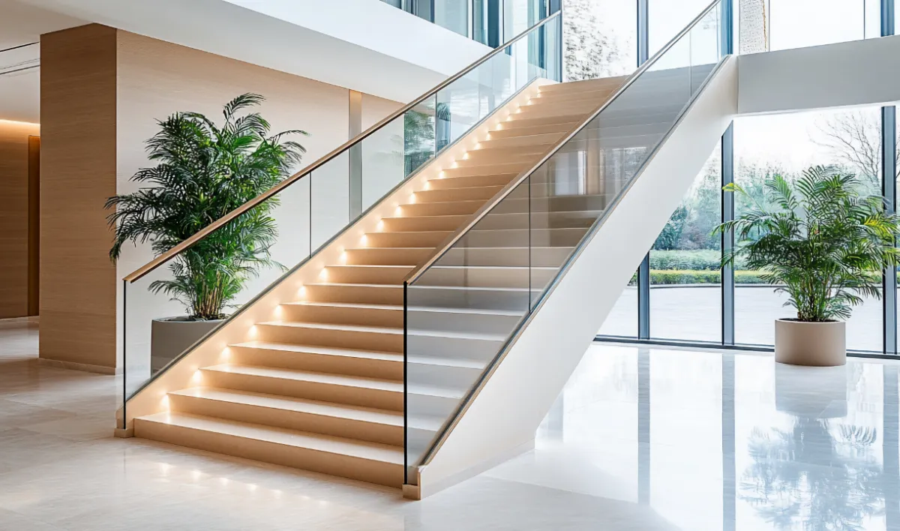

Glass Railing Systems: Types, Applications, and Selection Guide
Complete information about balcony and staircase glass railing systems, including materials, specifications, installation methods, and price calculation
Glass railing systems provide safety and aesthetic appeal for balconies, staircases, terraces, and ramps. This guide covers all types of glass railings, their components, calculation methods, and selection criteria. Both balcony and staircase railings use the same fundamental calculation logic, with variations in glass wastage percentages based on application type.
Perfect for architects, builders, site engineers, home owners, and vendors. Use our calculators to estimate budgets for your home, building, villa, or client projects. Get accurate package rates per RFT/RMT and total project costs instantly.
 Balcony
Balcony
Balcony Glass Railing System
Slim profile balcony railing with laminated or 12mm toughened glass, full-length base rail, and luxury handrail options.

StaircaseStaircase Glass Railing System
Safety-first staircase railing with slim base profiles, SS304 brackets, and elegant handrails for premium interiors.